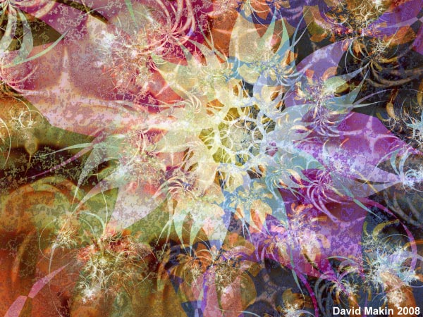
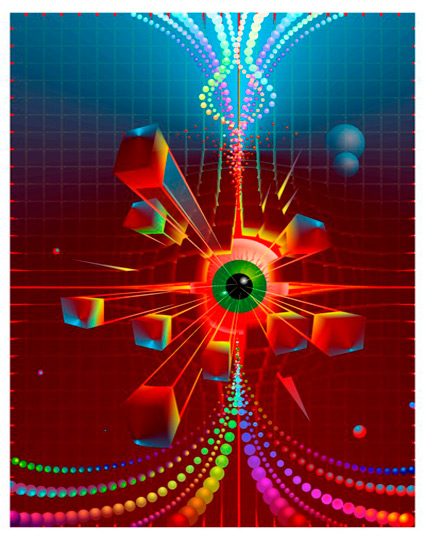
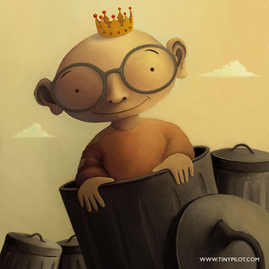
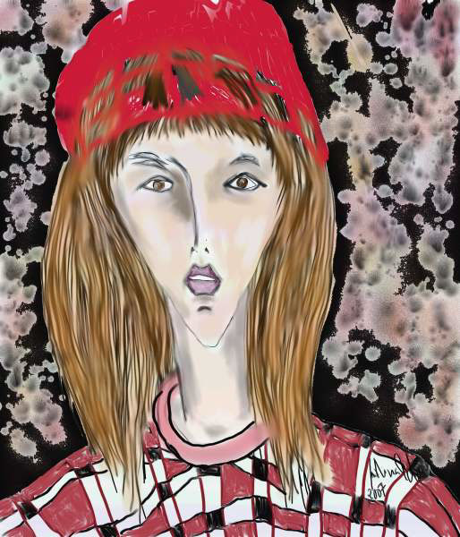
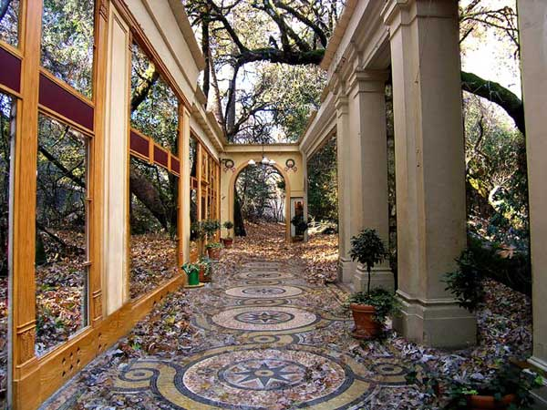
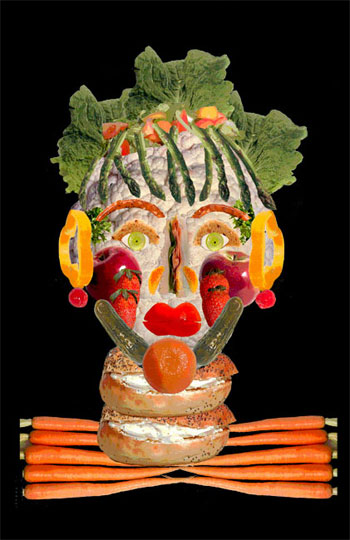
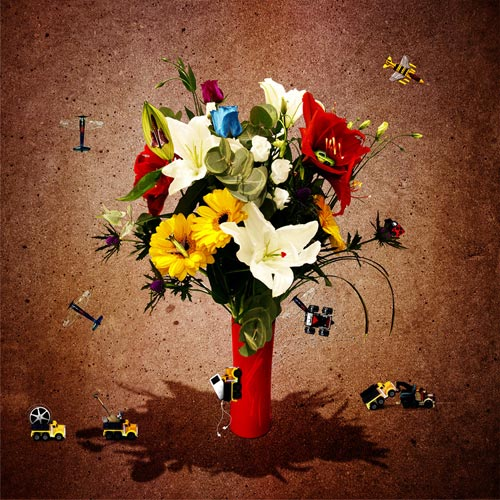
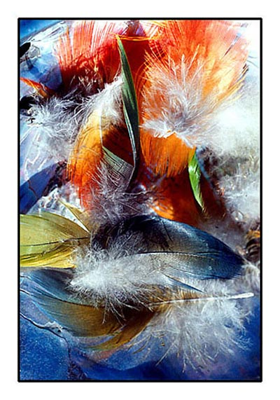
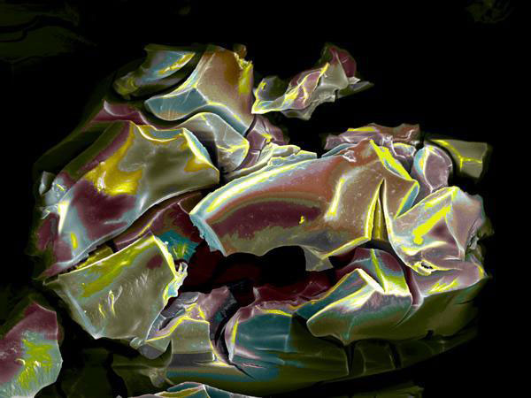

Tissue Flower 
by David Makin
07/22/2021
Awakening 
by Giuseppi Mariotti
07/23/2021
V Plate 8
by Claude McCoy
07/24/2021
King of Trash 
by Thomas Meldgaard
07/25/2021
The Girl with the Red Hat 
by Maria Christina Melo
07/26/2021
Gallerie Remains 
by Marc Moss
07/27/2021
Woman of Substance 
by M.M. Mulvihill
07/28/2021
Flowers 1 
by Michael Murray
07/29/2021
Feathers 
by Sam Norris
07/30/2021
In Pieces 
NanoArt
by Cris Orfescu
07/31/2021